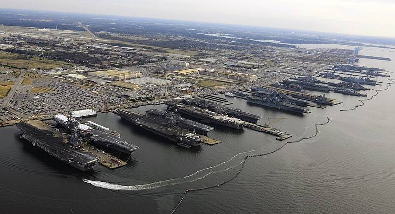

Naval Station Norfolk Virginia Virginia · Military base · 36.946°N, 76.305°W Nine aircraft carriers and amphibious ships at Naval Station Norfolk, December 2012. Photo: Ernest R. Scott, U.S. Navy, Public domain (source) The world's largest naval base. 1 Open in the interactive Watcher Sources Naval Station Norfolk Wikipedia